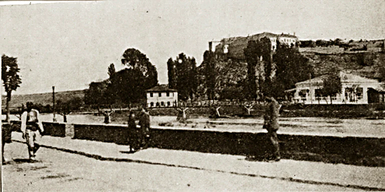
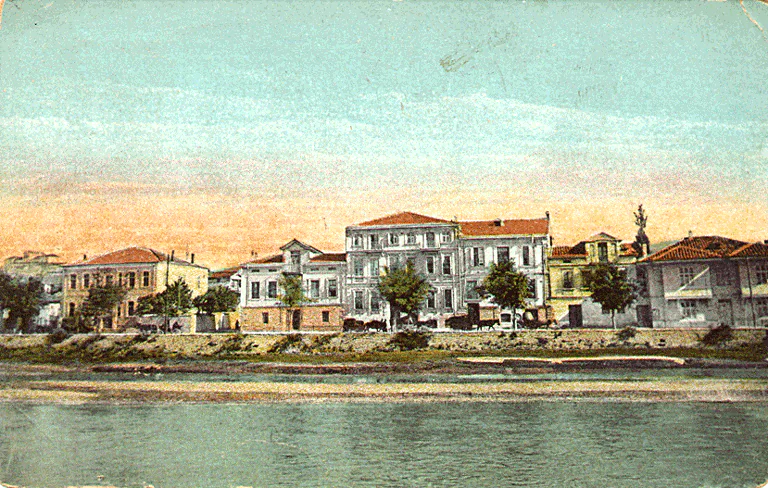
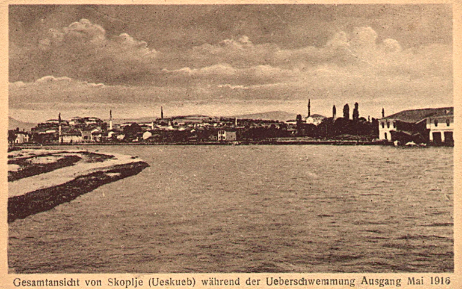
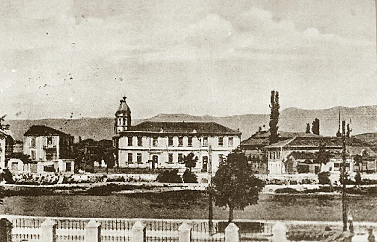
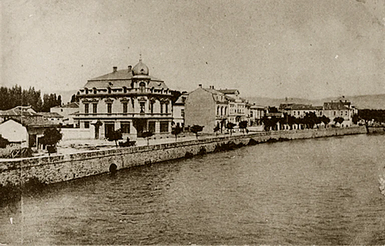
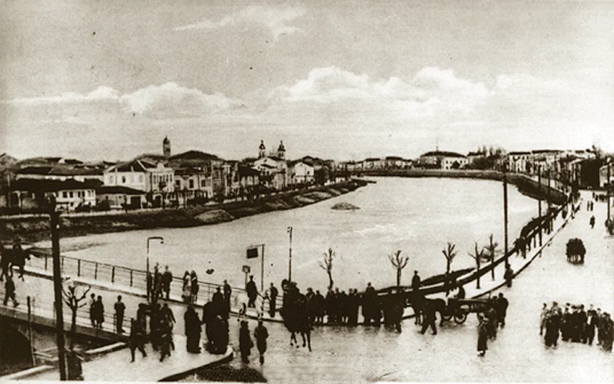
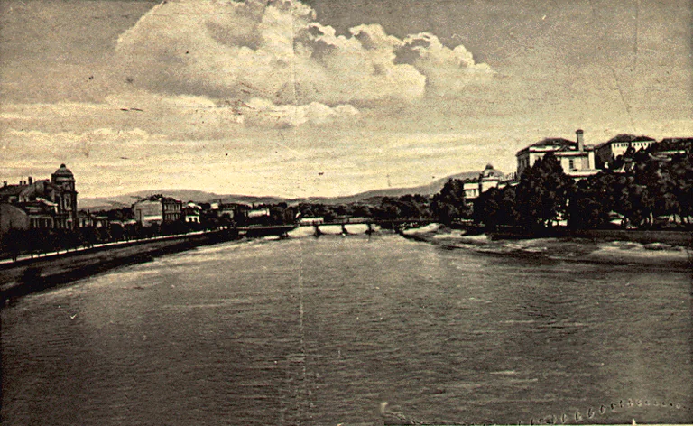
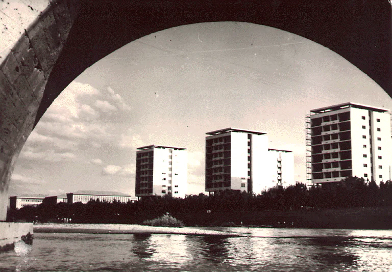
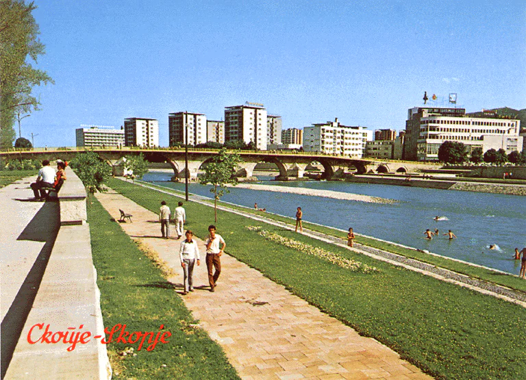

Na rijeci Vardar
- Scenarij
- Dimitrie Osmanli, Simon Drakul
- Kamera
- Kiro Bilbilovski
- Godina
- 1964
- Trajanje
- 00:16

Kej „13. studenoga“ - 1888. godina.

Vodenica na gornjem toku Vardara - kraj 19. stoljeća.

Iako je ova razglednica jako oštećena, ipak je ušla u ovu zbirku jer potječe s kraja 19. i početka 20. stoljeća, a mogu se vidjeti neke zgrade koje postoje samo na ovoj razglednici. Desno je Osmanska banka. U prednjem planu je stari platan na kojem je 1689. godine bilo obješeno mrtvo tijelo Karpoša. Iznad njega uzdiže se skopska tvrđava - Kale. Skroz lijevo vidi se dio Kamenog mosta.

Pogled na oba keja Vardara - početak 20. stoljeća.

Skoplje 1902. godine - pogled s Kamenog mosta prema drvenom mostu. Vardar ima izgrađene zidove keja. Uočavaju se stambene i javne zgrade. Na desnoj strani fotografije uočava se tursko kazalište, a na lijevoj, na samom početku, Burmali džamija. U pozadini je zgrada banke i stare pošte.

Pogled prema drvenom mostiću, starom turskom kazalištu i dijelu skopske tvrđave - Kale. (početak 20. stoljeća)

Pogled s desne obale Vardara prema skopskoj tvrđavi - Kale. (početak 20. stoljeća).

Pogled na lijevu obalu Vardara (kej „Dimitar Vlahov“) - početak 20. stoljeća. Na zidu keja vidi se ušće rijeke Serave.

Drveni most, prije izgradnje željeznog mosta. U pozadini su Kameni most i Burmali džamija. (kraj 19. stoljeća)

Početak 20. stoljeća. Osmanska banka, Skopska mitropolija i zgrade na lijevoj obali Vardara, odmah iza Kamenog mosta. U prednjem planu je stari platan.

Pogled na lijevu obalu Vardara prema crkvi Sv. Mine (s dvije kupole) i crkvi Sv. Bogorodice (u pozadini s jednom kupolom). - početak 20. stoljeća.

U prednjem planu su zgrada suda i stara škola, a u pozadini se vide kupole crkve Sv. Mine - početak 20. stoljeća.

Pogled na oba keja Vardara - početak 20. stoljeća.

Lijeva obala Vardara - kej „Dimitar Vlahov“ s Osmanskom bankom, Mitropolijom i dvjema kupolama crkve Sv. Mine u pozadini. (početak 20. stoljeća)

Lijeva obala Vardara - kej „Dimitar Vlahov“, između Kamenog i Željeznog mosta, sa stambenim zgradama. (početak 20. stoljeća)

Fotografija je snimljena s Kamenog mosta, oko 1910. godine. Lijevo se vidi staro tursko kazalište, a iznad njega skopska tvrđava - Kale.

Lijeva obala Vardara sa Židovskom mahalom i u pozadini skopskom tvrđavom - Kale. (1910. godina)

Fotografija je snimljena s Kamenog mosta, oko 1910. godine. Lijevo se vidi staro tursko kazalište, a iznad njega skopska tvrđava - Kale.

Skoplje u poplavi 1916. godine. Voda je dosegnula zgrade. S desne strane vidi se kako je dio zgrade srušen zbog poplave.

Skoplje nakon 1918. godine. Dva keja Vardara kao uzdužne prometnice važne za razvoj grada. U pozadini se vidi Kameni most s Burmali džamijom. Vidi se razvijena izgradnja brojnih zgrada na keju s različitim arhitektonskim oblicima, bliskima europskoj školi.

Skoplje prije Balkanskog rata. Kej na desnoj obali Vardara. U pozadini se vide Burmali džamija i Kameni most. U prednjem planu su ruski konzulat i druge zgrade. Arhitektura je pod utjecajem europske arhitektonske škole. Elementi klasičnog, akademskog i pseudoklasičnog oblikovanja.

Pogled na desnu obalu Vardara sa zgradama banke i stare pošte, koje su se nalazile između Kamenog mosta i drvenog mostića - početak 1920-ih.

Pogled prema lijevoj obali Vardara. U prednjem planu su zgrada suda i stara škola, a u pozadini se vide kupole crkve Sv. Mine. Desno od nje je crkva Sv. Bogorodice. - 1920-ih.

Pogled na desnu obalu Vardara sa zgradama banke i stare pošte, koje su se nalazile između Kamenog mosta i drvenog mostića - početak 1920-ih.

Desna obala Vardara ispred Kamenog mosta. Lijevo se vide zgrada banke i stara pošta. Desno na razglednici vidi se drveni mostić - oko 1920. godine.

Pogled na desnu obalu Vardara sa zgradama banke i stare pošte, koje su se nalazile između Kamenog mosta i drvenog mostića - početak 1920-ih.

Dio lijeve obale Vardara - približna lokacija današnje zgrade Makedonske radio-televizije. Vidi se minaret Vardar tekija džamije (izgrađene početkom 16. stoljeća) - početak 1920-ih.

Dio lijeve obale Vardara - približna lokacija današnje zgrade Makedonske radio-televizije. Vidi se minaret Vardar tekija džamije (izgrađene početkom 16. stoljeća) - početak 1920-ih.

Pogled na desnu obalu Vardara ispred Kamenog mosta. Srednji prostor keja. Lijevo se vide zgrade banke i stare pošte. Desno na razglednici vidi se drveni mostić - oko 1920. godine.

Skoplje - dio trga. Na lijevoj strani vidi se dio Kamenog mosta, a desno je prostor prije izgradnje Narodne banke. Kej je napravljen kao prometna ulica. U pozadini desno vidi se muška gimnazija.

Skoplje - dio trga. Na lijevoj strani vidi se dio Kamenog mosta, a desno je prostor prije izgradnje Narodne banke. Kej je napravljen kao prometna ulica. U pozadini desno vidi se muška gimnazija. - 1930-ih

Kej „Dimitar Vlahov“ - lijeva obala Vardara. - početak 1920-ih

Pogled s Kamenog mosta prema spomeniku palim borcima i Osmanskoj banci. - 1920-ih.

Panoramska slika Skoplja, odnosno lijevog keja Vardara s dijelom Židovske mahale, Pajko mahale i Kamenim mostom. - 1920-ih

Pogled na Skoplje s Časničkog doma prema židovskoj mahali. - 1920-ih.

Pogled na desnu obalu Vardara sa stambenim zgradama. U pozadini se vide Kameni most i izgradnja Časničkog doma. (oko 1925. godine)

Skoplje, 1930-ih. Pogled na oba keja. U prednjem planu su stara škola i zgrada suda, a odmah iza vide se dva zvonika crkve Sv. Mine. U pozadini se vidi Časnički dom, prije izgradnje Narodne banke. Fotografija je snimljena sa Željeznog mosta.

Kej na desnoj obali Vardara ispred Kamenog mosta. U prednjem planu je stambena zgrada s dućanima u prizemlju i ulazima u pasaž „Aroesti“, koji je izgrađen 1920-ih i predstavljao je mali trgovački centar s obrtničkim i trgovačkim dućanima. (U katastrofalnom potresu 1963. godine na ovom je mjestu poginulo mnogo ljudi.) U pozadini se vide Poljoprivredna banka, Časnički dom, Narodna banka i Kameni most. (1930-ih)

Kej „13. studenoga“ sa stambenim zgradama, dijelom Kamenog mosta i Časničkim domom - 1920-ih.

Pogled prema keju „13. studenoga“ na desnoj obali Vardara, Kamenom mostu i Časničkom domu - snimljeno oko 1927. godine.

Dio trga ispred Kamenog mosta i obje obale Vardara. Lijevo u pozadini vide se crkva Sv. Mine s dvije kupole i malo lijevije crkva Sv. Bogorodice. Prostor keja uređen je, s postavljenom električnom rasvjetom i zelenilom. (1925. - 1930.)

Desna obala Vardara, od drvenog mostića prema parku - 1930-ih.

Kej „13. studenoga“. Pogled prema Kamenom mostu i Časničkom domu - kraj 1930-ih.

Kej na lijevoj obali Vardara ispred Kamenog mosta sa stambenim zgradama u Židovskoj mahali. U pozadini se vidi Osmanska banka - oko 1930. godine.

Pogled s Kamenog mosta na Vardaru prema drvenom mostiću i objema obalama rijeke. Desno je Narodno kazalište, a lijevo zgrada banke i stare pošte. - 1930-ih

Pogled na naselje „Bunjakovec“. Korito Vardara osigurano je zemljanim nasipima. - 1930-ih

Lijeva i desna obala Vardara. Snimljeno s Kamenog mosta. Srednji prostor keja s obje strane Vardara. - oko 1930. godine

Desna obala Vardara. Kej „13. studenoga“. - oko 1930. godine

Skoplje, 1930-ih. Pogled na oba keja. Pogled sa Željeznog mosta na Vardaru na oba keja, izgrađena stambenim i javnim zgradama. U prednjem planu desno su stara škola, zgrada suda i dva zvonika crkve Sv. Mine. U pozadini su Časnički dom i Narodna banka.

Pogled prema keju „13. studenoga“ na desnoj obali Vardara, Kamenom mostu i Časničkom domu - snimljeno oko 1930. godine.

Pogled na oba keja Vardara i željezni most. - 1950-ih

Pogled na oba keja Vardara i betonski most. - 1950-ih.

Desna obala Vardara iza kamenog mosta, snimljena prije katastrofalnog potresa 26. srpnja 1963. godine. U pozadini se vide Časnički dom i Narodna banka.

Kej na desnoj obali Vardara. Poslovno-stambeni prostor ili „Kule na Vardaru“ (projektant arh. Aleksandar Serafimovski). Fotografija je snimljena 1960-ih, prije katastrofalnog potresa 26. srpnja 1963. godine.

Desna obala Vardara s Kamenim mostom, kulama uz Vardar i Grand hotelom „Skopje“, snimljena neposredno nakon katastrofalnog potresa 26. srpnja 1963., a prije regulacije Vardara. Regulacija je provedena u razdoblju od 1965. do 1968. godine.

Pogled prema desnoj obali Vardara. Luk u prednjem planu dio je kamenog mosta, a snimljeno je 1950-ih.

Pogled s lijeve obale Vardara prema Kamenom mostu. U pozadini se vide Kule na Vardaru. - 1970-ih

Pogled na današnju središnju poštu - Telekomunikacijski centar (izgrađen 1974. - 1980., projektant Janko Konstantinov) i kej ispred nje.

 Akvadukt4 razglednice
Akvadukt4 razglednice Kale30 razglednica
Kale30 razglednica Mostovi60 razglednica
Mostovi60 razglednica Kej58 razglednica
Kej58 razglednica Trg46 razglednica
Trg46 razglednica Građevine66 razglednica
Građevine66 razglednica Kršćanski hramovi19 razglednica
Kršćanski hramovi19 razglednica Muslimanske građevine33 razglednice
Muslimanske građevine33 razglednice Časnički dom29 razglednica
Časnički dom29 razglednica Kazalište28 razglednica
Kazalište28 razglednica Željeznički kolodvor13 razglednica
Željeznički kolodvor13 razglednica Škole36 razglednica
Škole36 razglednica Parkovi12 razglednica
Parkovi12 razglednica Tržnice18 razglednica
Tržnice18 razglednica Ulice38 razglednica
Ulice38 razglednica Panorama I60 razglednica
Panorama I60 razglednica Panorama II30 razglednica
Panorama II30 razglednica Kolaži55 razglednica
Kolaži55 razglednica Poplave9 razglednica
Poplave9 razglednica Potres27 razglednica
Potres27 razglednica Skoplje 2000.26 razglednica
Skoplje 2000.26 razglednica